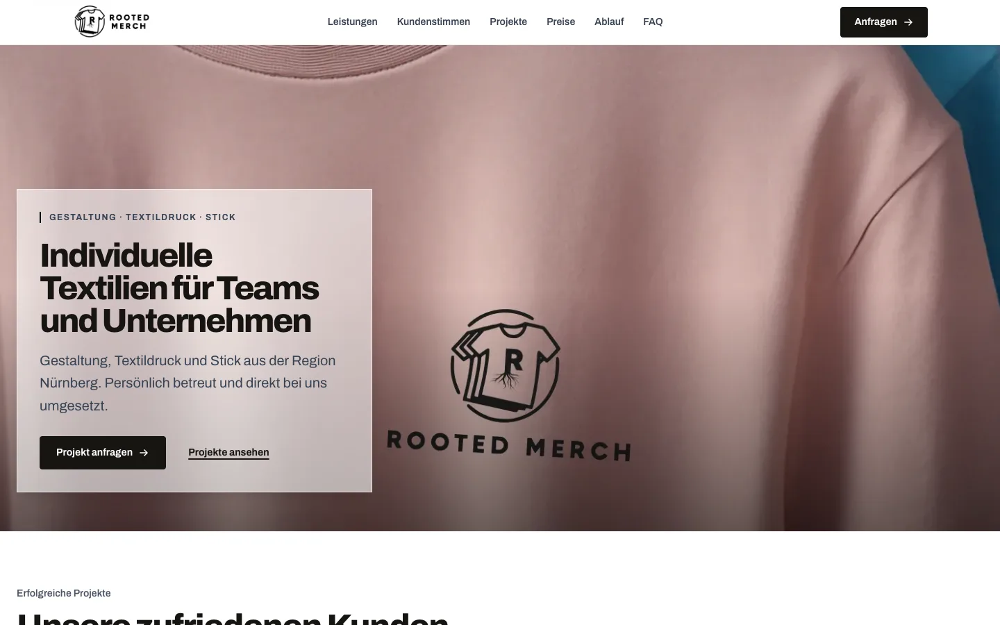

Webseite für Vereins- & Firmen-Merch.
Eine fokussierte B2B-Webseite mit einem klaren Ziel: Vereine und Unternehmen fragen ihr Musterdesign an – lokal bedruckt in der Region Nürnberg.

- Branche
- Textildruck (B2B)
- Leistung
- Webentwicklung
- Ziel
- Anfragen für Musterdesigns
Das Problem: B2B-Anfragen ohne eigenen Weg
Vereine und Firmen kommen ohne Umwege zu ihrer Anfrage.
Unter der Marke ROOTED Merch bedruckt das Team hinter ROOTD. Kleidung für Vereine und Unternehmen, vom Jubiläums-Hoodie bis zur Teamausstattung.
Dieses Angebot hatte keinen eigenen Auftritt. Firmenkunden mussten es neben dem Endkunden-Shop erst finden und wussten nicht, wie sie anfragen sollen.
So hat die Webseite den Weg zur Anfrage verändert
Was ein Verein oder eine Firma vorher erlebte und was heute.
-
Das Angebot finden
VorherDas B2B-Angebot lief neben dem Endkunden-Shop mit.
HeuteEin eigener Auftritt nur für Vereine und Unternehmen.
-
Verstehen, was man bekommt
VorherLeistungen wie Grafikservice und lokaler Druck waren nicht auf einen Blick sichtbar.
HeuteGrafikservice, lokaler Druck und Bio-Baumwolle stehen klar auf der Seite.
-
Vertrauen fassen
VorherEs fehlten Belege aus echten Projekten.
HeuteKundenstimmen und realisierte Projekte zeigen, was schon entstanden ist.
-
Anfragen
VorherEs gab keinen klaren nächsten Schritt.
HeuteDurchgängig ein Button: Musterdesign anfragen, auch vom Smartphone.
Was der Kunde davon hat
- Mehr gezielte Anfragen
Die Seite führt Besucher direkt zur Anfrage für ein Musterdesign.
- Klare Trennung
Firmenkunden und Endkunden haben jeweils ihren eigenen Auftritt.
- Kurzer Weg zum Auftrag
Das unverbindliche Musterdesign ist der erste Schritt, ohne Umwege.
Dein Projekt könnte das nächste sein.
Erzähl uns von deiner Idee. Im kostenlosen Erstgespräch klären wir, was sich für dein Team verbessern lässt.